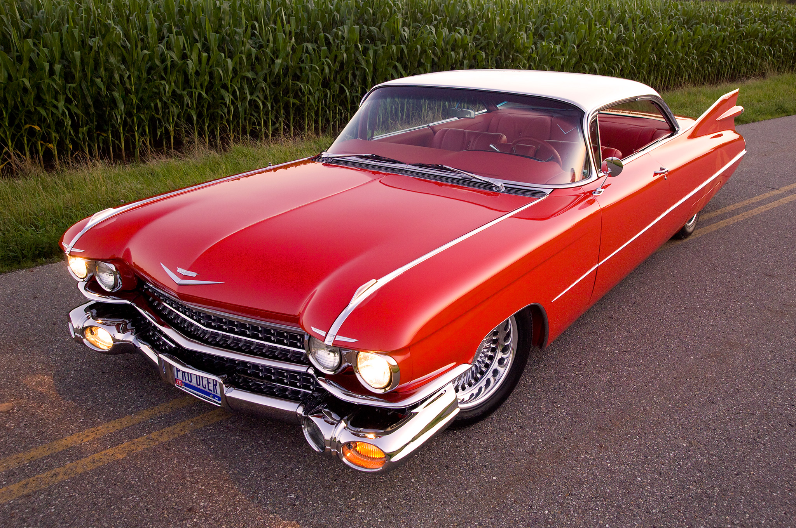
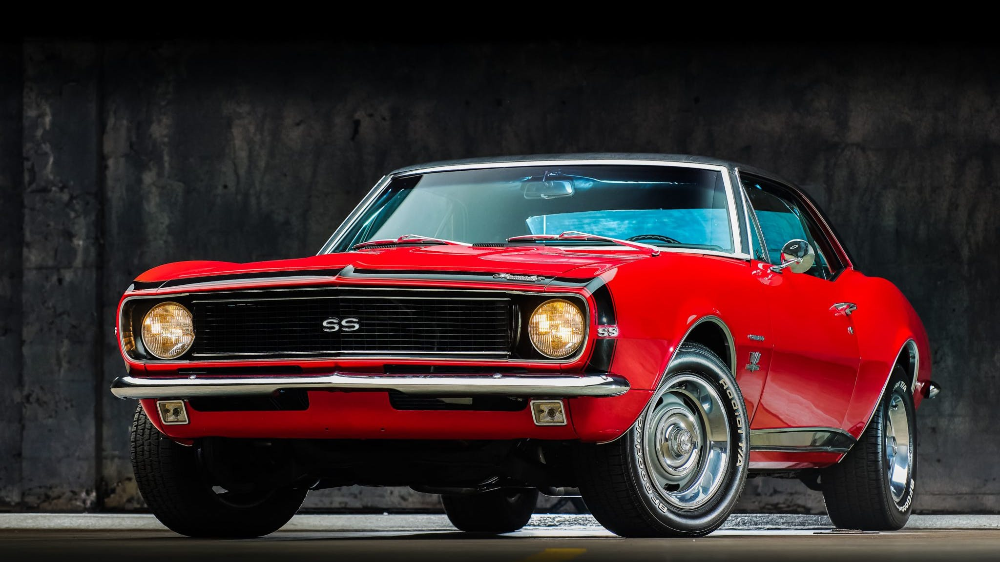

Los clásicos
Un automóvil clásico a aquel que tiene al menos 25 años de antigüedad, sin embargo, para los amantes de los coches;
los automóvil clásicos son aquellos que han dejado una huella en la cultura popular.
A continuación se mostrarán dos de los carros clásicos más icónicos:
-
El Cadillac Eldorado Biarritz de 1959 tenía un estilo y una personalidad en sí mismo.
Decir que las aletas, o incluso el vehículo en sí, eran "grandes" es quizás quedarse corto.
El moderno motor V8 empujó las dos toneladas y media del Eldorado a velocidades de hasta 120 mph.

-
El Camaro Rally Sport (RS) y el Camaro Super Sport (SS).
Este último contaba con un motor V8 de 350 pulgadas cúbicas (5,7 litros) y otro opcional de 396 plg³ (6,5 litros).
